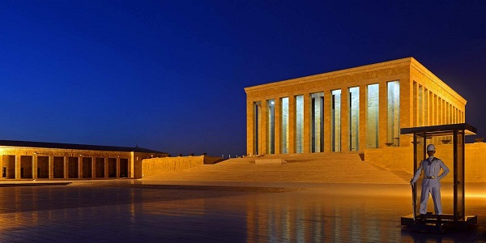

Anıtkabir, Mustafa Kemal Atatürk’ün vefatını takip eden günlerde tüm halkın ortak isteği ile hayata geçirilen bir anıt mezar projesi.
10 Kasım 1938 tarihinde Atatürk’ün kaybedilmesi ile, onun açtığı aydınlanma yolunun ölümsüzleştirilmesi ve ona duyulan minnettarlığın vücut bulması herkesin ortak arzusu haline geldi.
Uluslararası bir mimari yarışmasına da konu olan bu hisler iki Türk mimarın elinde hayat buldu.
1941 yılında açılan yarışmanın finalistlerinden olan Prof. Dr. Emin Onat ve Doç. Dr. Orhan Arda’ya ait projenin inşasına 1944 yılında başlandı.
İnşaatı 9 yıl süren, 4 ana aşamada tamamlanan ve Türk halkı için büyük önemi bulunan bu yapı; 1953 yılından bu yana Anıttepe olarak da bilinen toprakları süslüyor.
Projenin hayata geçirilmesi aşamasında Anıtkabir’in yeri için Çankaya, Ankara Kalesi, Gazi Orman Çiftliği ya da Altındağ gibi alternatifler seçici kurul tarafından değerlendirilse de,
o dönem Rasattepe olarak anılan yere karar verilmesinde özel bir neden de var.
Mustafa Kemal Atatürk’ün yıllar önceki bir Ankara gezisi sırasında burası için “Bu tepe ne güzel bir anıt yeri…” değerlendirmesinde bulunduğu biliniyor.
Aynı tepede yer alan ve Anıtkabir kazısı sırasında ortaya çıkarılan Frig uygarlığına ait mezarlar ve arkeolojik kalıntılar ise günümüzde Anadolu Medeniyetleri Müzesi’nde sergileniyor.

Anıtkabir’in tarihi öneminin yanında, ona kültürel ve sosyolojik olarak değer katan pek çok detay da mevcut.
Ankara’nın birçok yerinden görülebilen ve ışığı ile uzakları aydınlatan bu eser, Atatürk’ün bir silüeti niteliğinde.
İçerisinde bulunan Şeref Holü’nde tüm dünyadan ziyaretçilerin en iyi şekilde karşılanabilmesi için her şey düşünülmüş durumda.
İki ana bölümde incelenebilen Anıtkabir, Barış Parkı ve Anıt Bloku’ndan oluşuyor.
Anıt Bloku girişinde bulunan aslanlı yoldaki 24 heykel, 24 Oğuz boyunu temsil ederek Türk tarihine selam veriyor.
Yol boyunca aslanların varlığı kuvveti ve sükuneti çağrıştırıyor.
Çift halinde olmaları birlik ve bütünlük kavramlarını sembolize ederken, yatar pozisyonda olmaları barışı vurguluyor.
Aslanlı Yol’daki taşların aralıklı dizilmesi bile, ziyaretçilerin Ata’nın huzuruna başları öne eğik çıkmalarını sağlaması bakımından anlamlı.
Burada aynı zamanda bir tören meydanı ve mozole var.
Anıtkabir’in diğer bölümü olan Barış Parkı ise Atatürk’ün “Yurtta sulh, cihanda sulh” sözünden ilham alıyor.
104 ayrı türden 48 bin 500 adet ağaç, parkın içinde yükselmeye devam ediyor.
Anıtkabir’de bulunan kulelerin isimleri bile, Türk kültüründe ve uygarlık yolunda belirleyici olan kavramlara dikkat çekmek için yeterli.
Anıtkabir sınırları içinde İstiklal, Hürriyet, Mehmetçik, Zafer, Barış, 23 Nisan, Misak-ı Milli, Müdafaa-i Hukuk, Cumhuriyet ve İnkılap kuleleri mevcut.
Yine Anıtkabir içinde yer alan Atatürk ve Kurtuluş Savaşı Müzesi’nde Atatürk’ün aldığı özel hediyeler, nüfus cüzdanı, saatleri, madalyaları, tabancaları ve kitapları sergilenmeye devam ediyor.
Anıtkabir’in Mezar Odası olarak adlandırılan bölümünde ise Mustafa Kemal Atatürk, yurdun dört bir köşesinden getirilen vatan toprağının içinde yatıyor.
Vatan toprağına ayrıca Atatürk’ün Selanik’teki evinin bahçesinden, Kore’deki Türk Şehitliği’nden, Kıbrıs’tan özellikle getirilen topraklar da dahil bulunuyor.
Anıtkabir ziyareti sırasında bu bölümü ziyaret etmek mümkün değil. Mezar odasının açılabilmesi için Genelkurmay Başkanlığı’nın özel izni gerekiyor.
Anıtkabir; daha önce bir gözlem istasyonuna ev sahipliği yaptığı için Rasattepe olarak adlandırılan bir tepe üzerinde yer alıyor.
Anıt Caddesi, Tandoğan, Çankaya açık adresinde bulunan anıt mezara Ankara’nın birçok yerinden kolaylıkla ulaşmak mümkün.
Türkiye’nin tam merkezinde olan Ankara’nın, yine tam ortasında da Anıtkabir’in bulunduğunu söylemek hata olmaz.